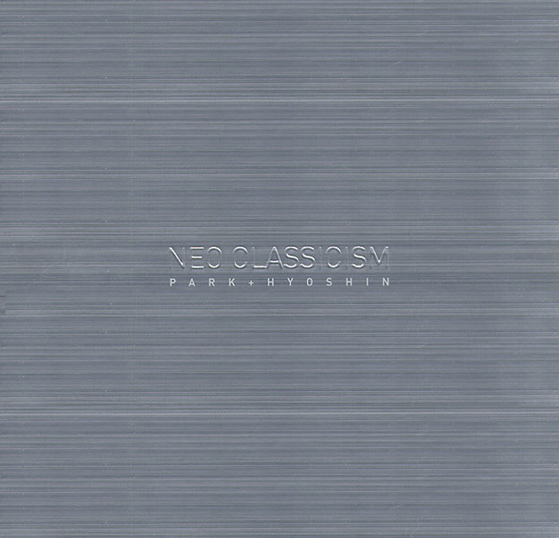

안녕하세요 라보엠입니다.
지난번 포스팅 거미의 해줄 수 없는 일처럼 박효신의 노래가 리메이크도 많이 되었지만, 박효신도 리메이크 앨범을 통해 다시 부른 노래들이 많이 있습니다. Neo Classicism 이라는 2005년의 이 리메이크 앨범은 타이틀곡 윤상의 흩어진 나날들외에 모노 넌 언제나, 눈의 꽃 등 추억의 명곡들을 박효신만의 느낌으로 재해석하여 멋진 앨범을 완성시켰습니다. 발매 당시에는 귀에 들어오지 않았다가, 요즘 많이 듣는 노래가 있습니다. 원곡 기억 속의 먼 그대에게 - 박미경(1996)의 노래를 리메이크한 곡으로 원곡과는 다르게 전주도 없이 후렴구를 훅치고 들어오는 박효신의 목소리를 듣고 있으면 넋이 나갈 것만 같습니다.

기억 속의 먼 그대에게 듣기
기억 속의 먼 그대에게 - 가사
하지만 오랜 뒤에 난 혼자 울고 있었어
네게 주었던 아픔을 되돌려 받으며
용서해줘 너의 사랑을 몰랐었던
나의 자만이 이제와 후회하고 있는 걸
그땐 정말 나는 몰랐었어 너의 사랑이
나에게는 얼마나 소중했었는지
내멋대로 너를 보냈었지
눈물 흘리며 애원하던 너를
냉정하게 뒤돌아서며
미련조차 난 없었어
그게 멋있는 이별이라 믿고 널 보내며
하지만 오랜 뒤에 난 혼자 울고 있었어
네게 주었던 아픔을 되돌려 받으며
용서해줘 너의 사랑을 몰랐었던
나의 자만이 이제와 후회하고 있는 걸
돌아보면 나의 기억 속엔
너는 언제나 웃고있어
상처받은 가슴을 안고
내가 원한 이별이었기에
너는 말없이 날 보내줬었지
눈물섞인 너의 목소릴 등뒤로 남겨둔 채로
그렇게 난 쉽게 널 떠났는데
하지만 오랜 뒤에 난 혼자 울고 있었어
네게 주었던 아픔을 되돌려 받으며
용서해줘 너의 사랑을 몰랐었던
나의 자만이 이제와 후회하고 있는 걸
하지만 오랜 뒤에 난 혼자 울고 있었어
네게 주었던 아픔을 되돌려 받으며
용서해줘 너의 사랑을 몰랐었던
나의 자만이 이제와 후회하고 있는 걸
원곡 박미경 기억 속의 먼 그대에게
원곡과 비교해 들어보면 새로운 느낌을 받으실 수 있습니다.